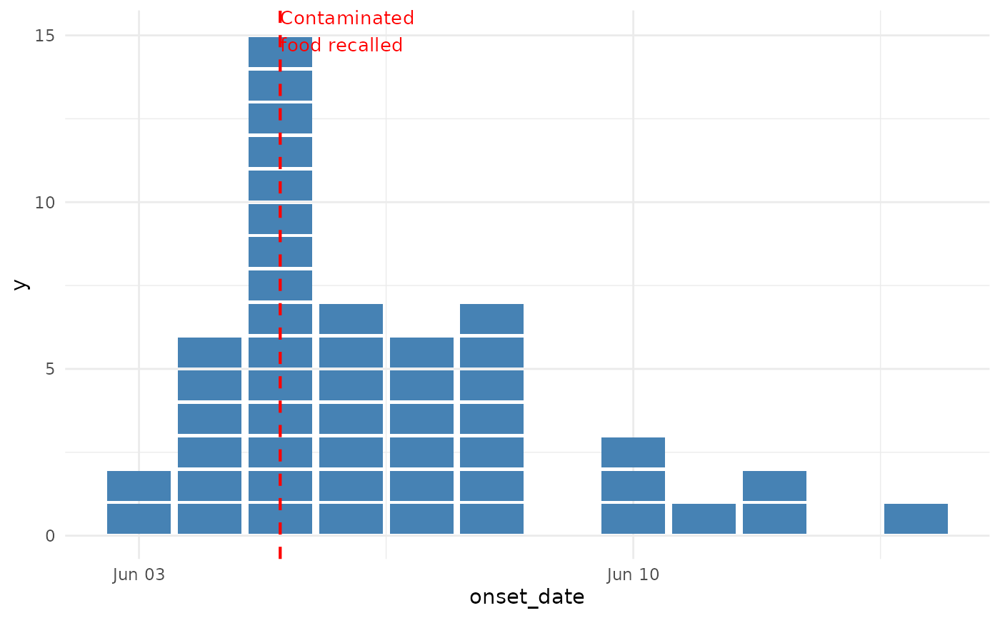
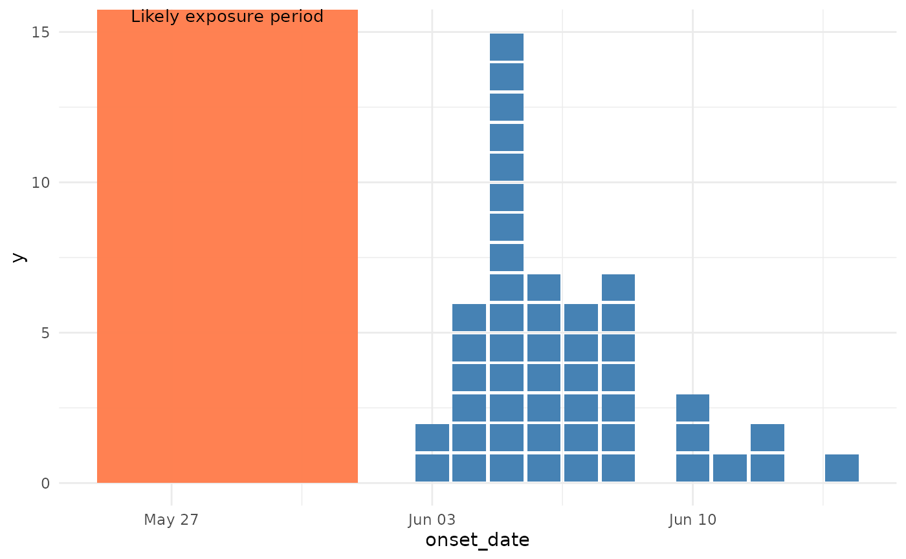
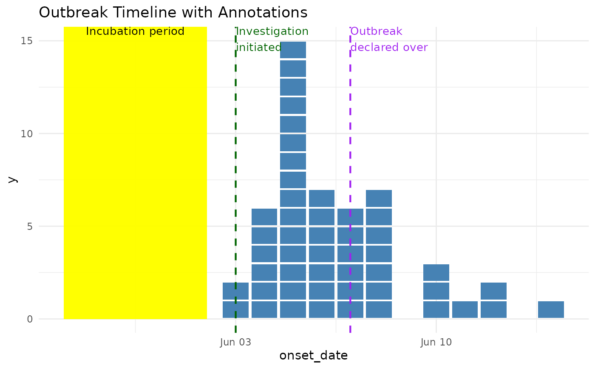

Helper functions to add contextual annotations to epidemic curves, such as
intervention dates (events) or exposure periods (shaded regions). These
functions work with both static ggplot2 plots and interactive plotly
conversions using ggplotly().
Usage
annotate_event(
date,
label,
colour = "red",
color = NULL,
linetype = "dashed",
linewidth = 0.75,
label_y = Inf,
label_hjust = 0,
label_vjust = 1,
label_size = 3.5,
...
)
annotate_period(
date,
end_date,
label,
fill = "grey",
colour = NA,
color = NULL,
alpha = 0.3,
label_y = Inf,
label_hjust = 0.5,
label_vjust = 1,
label_size = 3.5,
...
)Arguments
- date
Date or POSIXct value for the event or start of period
- label
Character string for the annotation label
- colour, color
Colour for the line or fill (American/British spelling accepted)
- linetype
Line type for event markers (default: "dashed")
- linewidth
Width of the event line (default: 0.75)
- label_y
Vertical position for the label (default: "top" for events, "top" for periods). Can be numeric or "top"/"bottom"/"middle".
- label_hjust
Horizontal justification for label (default: 0 for events, 0.5 for periods)
- label_vjust
Vertical justification for label (default: 1 for events, 1 for periods - labels hang down from the top)
- label_size
Text size for label (default: 3.5)
- ...
Additional arguments passed to the underlying geom
- end_date
End date for periods (required for
annotate_period())- alpha
Transparency for period shading (default: 0.3)
Examples
library(ggplot2)
cases <- simulate_outbreak(n = 50, seed = 123)
# Add an event marker for an intervention
ggplot(cases, aes(x = onset_date)) +
geom_epicurve(fill = "steelblue") +
annotate_event(
date = as.Date("2024-06-05"),
label = "Contaminated\nfood recalled",
colour = "red"
) +
theme_minimal()

# Add a period for exposure window
ggplot(cases, aes(x = onset_date)) +
geom_epicurve(fill = "steelblue") +
annotate_period(
date = as.Date("2024-05-25"),
end_date = as.Date("2024-06-01"),
label = "Likely exposure period",
fill = "coral"
) +
theme_minimal()

# Combine multiple annotations
ggplot(cases, aes(x = onset_date)) +
geom_epicurve(fill = "steelblue") +
annotate_period(
date = as.Date("2024-05-28"),
end_date = as.Date("2024-06-02"),
label = "Incubation period",
fill = "yellow"
) +
annotate_event(
date = as.Date("2024-06-03"),
label = "Investigation\ninitiated",
colour = "darkgreen"
) +
annotate_event(
date = as.Date("2024-06-07"),
label = "Outbreak\ndeclared over",
colour = "purple"
) +
theme_minimal() +
labs(title = "Outbreak Timeline with Annotations")

# Works with plotly for interactive plots (same code!)
if (FALSE) { # \dontrun{
library(plotly)
p <- ggplot(cases, aes(x = onset_date)) +
geom_epicurve(fill = "steelblue") +
annotate_period(
date = as.Date("2024-05-28"),
end_date = as.Date("2024-06-02"),
label = "Exposure period",
fill = "yellow"
) +
annotate_event(
date = as.Date("2024-06-05"),
label = "Investigation",
colour = "red"
) +
theme_minimal()
ggplotly(p)
} # }